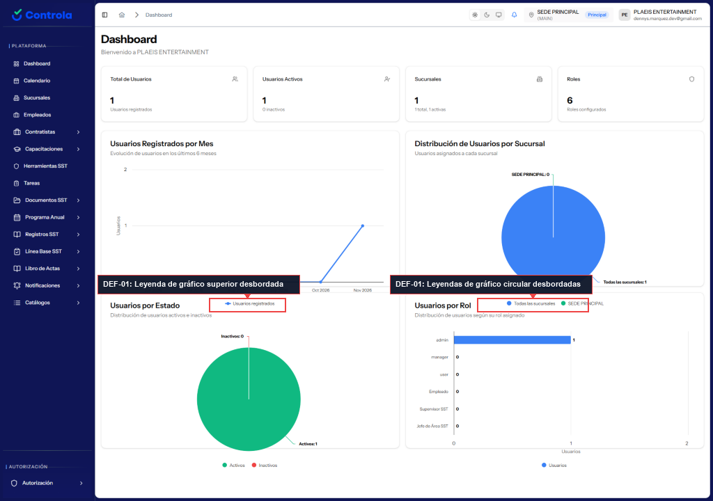
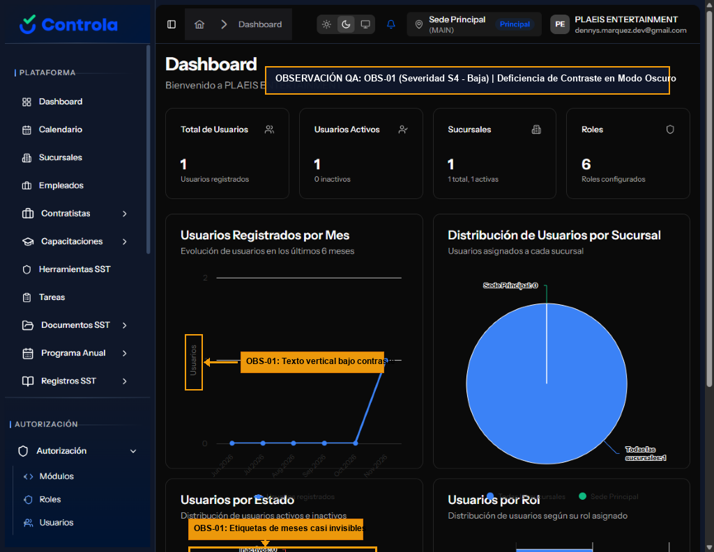
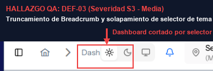
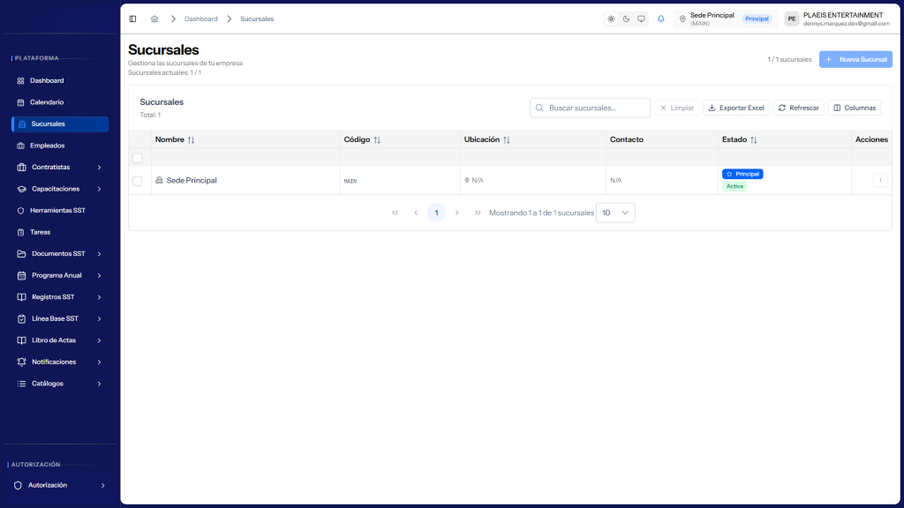
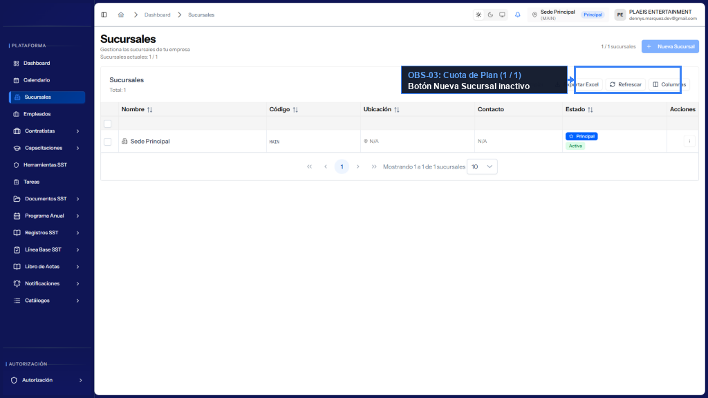
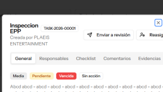

DEF-01
Solapamiento en Highcharts
QUÉ SUCEDE
Las leyendas de los gráficos superiores invaden los títulos de “Usuarios por Estado” y “Usuarios por Rol”.
Causa técnica
El contenedor de Highcharts carece de
overflow: hidden y de margen inferior suficiente (padding-bottom) para alojar las etiquetas flotantes generadas por la serie de datos en pantalla de escritorio.
EVIDENCIA

OBS-01
Pérdida de Contraste en Modo Oscuro
QUÉ SUCEDE
Al activar el modo oscuro, las etiquetas y meses en los gráficos Highcharts conservan color gris oscuro fijo (#333333) dificultando su lectura.
Causa técnica
Las opciones de Highcharts tienen estilos en línea estáticos en lugar de clases CSS o variables dinámicas adaptadas al tema oscuro.
EVIDENCIA

DEF-03
Colisión en Breadcrumbs de Barra Superior
QUÉ SUCEDE
En resoluciones de laptops (1024 a 1280px), la ruta de migas de pan se trunca a “Dash” y el botón de tema se superpone directamente encima.
Causa técnica
El contenedor flexible de la barra superior carece de
flex-wrap: wrap y no tiene un ancho mínimo (min-width) para salvaguardar el bloque de breadcrumbs.
EVIDENCIA

OBS-02
Falta de Estado Vacío en Búsqueda
QUÉ SUCEDE
Al buscar un texto inexistente (ej. “XYZ123”), la tabla queda completamente en blanco sin un mensaje que confirme la ausencia de registros.
Causa técnica
Falta implementar una fila de estado vacío condicional cuando
resultados.length === 0 que indique “No se encontraron sucursales para su búsqueda”.
EVIDENCIA

OBS-03
Límite de Cuota en Sucursales
QUÉ SUCEDE
El botón “+ Nueva Sucursal” se renderiza inhabilitado (disabled), limitando la ejecución de pruebas de creación de sedes.
Causa técnica
La empresa PLAEIS ENTERTAINMENT tiene contratada la cuota 1 / 1 sucursales. Se requiere ampliar temporalmente el plan para habilitar la creación de nuevas sedes.
EVIDENCIA

DEF-04
Desbordamiento y Botones Ocultos en Detalle de Tarea
QUÉ SUCEDE
Al abrir el modal "Ver Tarea", el cuadro de diálogo es demasiado estrecho (512px) y se desborda horizontalmente: los botones "Editar" y "Cancelar" quedan cortados fuera de la pantalla (offscreen) y la pestaña "Historial" queda cercenada, forzando una barra de scroll horizontal en la base del diálogo.
Causa técnica
El contenedor modal utiliza una clase fija restrictiva (
max-w-lg = 512px) que no soporta el ancho del conjunto de botones de acción en la cabecera (ancho acumulado superior a 470px) con flex-wrap: nowrap. Se requiere ampliar a max-w-2xl o max-w-3xl y añadir flex-wrap: wrap al contenedor de botones.
EVIDENCIA

Desliza la tabla hacia los lados para ver todas las columnas
| Ficha | ID Caso | Fecha Detección | Perfil / Rol | Módulo / Componente | ¿Qué se prueba? (Descripción) | ¿Qué debería pasar? (Esperado) | Resultado Obtenido | Severidad | Prioridad | Estado | Hallazgo | Evidencia |
|---|---|---|---|---|---|---|---|---|---|---|---|---|
| CP-DASH-01 | 16/11/2026 | Admin Empresa | Dashboard > Tarjetas de Resumen Fase 5: Evaluar y Medir |
Verificar que la suma de usuarios activos e inactivos coincida con el total de usuarios mostrado en las tarjetas. | El total de usuarios debe ser igual a la suma de los usuarios activos más los inactivos (1 = 1 + 0). | Correcto: 1 usuario total = 1 activo + 0 inactivos. Se muestran exactamente 1 sucursal y 6 roles. | N/A | P1 - Alta | ✓ PASS | — | ||
| CP-DASH-02 | 16/11/2026 | Admin Empresa | Dashboard > Gráficos Estadísticos Fase 5: Evaluar y Medir |
Comprobar que los gráficos del panel no se desborden ni tapen las tarjetas de abajo. | Cada gráfico debe verse completo dentro de su recuadro, sin tapar ningún texto ni título vecino. | Falla visual: los textos del gráfico superior se salen de su caja y tapan los títulos 'Usuarios por Estado' y 'Usuarios por Rol'. | S3 - Media | P2 - Media | ✕ FAIL | DEF-01 | ||
| CP-DASH-03 | 16/11/2026 | Admin Empresa | Dashboard > Modo Oscuro Fase 5: Evaluar y Medir |
Cambiar al modo oscuro y revisar que todos los textos y números del gráfico se lean con facilidad. | Al activar el fondo oscuro, todas las letras y números deben verse claros y fáciles de leer. | El fondo cambia bien a oscuro, pero los números de los gráficos se quedan en color negro y se pierden en la pantalla. | S4 - Baja | P3 - Baja | ⚠ PASS c/ OBS | OBS-01 | ||
| CP-DASH-04 | 16/11/2026 | Admin Empresa | Dashboard > Menú Lateral Fase 5: Evaluar y Medir |
Ocultar y mostrar el menú lateral para comprobar que la pantalla se acomode bien y se vea el logo. | El menú debe encogerse con suavidad y mostrar el ícono del logo de la empresa. | Correcto: al retraer el menú lateral la interfaz se adapta con fluidez y el logo/isotipo sí se muestra visible en la esquina superior. | N/A | P2 - Media | ✓ PASS | — | ||
| CP-DASH-05 | 16/11/2026 | Admin Empresa | Barra Superior > Campana y Perfil Fase 5: Evaluar y Medir |
Abrir el panel de notificaciones y entrar a la página de perfil del usuario. | Debe desplegarse el recuadro con las notificaciones y el enlace debe llevar a la pantalla de perfil. | Correcto: la campanita abre de inmediato indicando 'Sin notificaciones nuevas' y la página de perfil carga al instante. | N/A | P2 - Media | ✓ PASS | — | ||
| CP-DASH-06 | 16/11/2026 | Admin Empresa | Dashboard > Carga General Fase 5: Evaluar y Medir |
Comprobar que todos los recursos, fotos y scripts del panel carguen sin errores en la consola. | Todos los elementos e imágenes deben cargar correctamente sin enlaces rotos ni fallos en el servidor. | Correcto: la consola no registra excepciones JavaScript fatales y los componentes renderizan con total fluidez. | N/A | P3 - Baja | ✓ PASS | — | ||
| CP-BRAN-01 | 16/11/2026 | Admin Empresa | Sucursales > Tabla de Sedes Fase 1: Configurar Empresa |
Ver la tabla de sucursales en pantalla de computadora (1920x1080) y confirmar que todo esté visible. | La lista debe mostrar nombre, código, ubicación y estado de la sede de forma clara, ordenada y sin recortes. | Correcto: la tabla muestra la Sede Principal con su estado 'Activo' en verde y todas sus columnas perfectamente legibles. | N/A | P1 - Alta | ✓ PASS | — | ||
| CP-BRAN-02 | 16/11/2026 | Admin Empresa | Sucursales > Buscador Fase 1: Configurar Empresa |
Buscar una sede por su nombre y comprobar qué sucede si se escribe una palabra que no existe. | Al escribir debe encontrar la sede al instante; y si no existe ninguna, debe avisar con el mensaje: 'No se encontraron sucursales'. | La búsqueda funciona bien, pero al escribir una palabra inexistente la tabla queda totalmente en blanco sin avisar nada. | S4 - Baja | P3 - Baja | ⚠ PASS c/ OBS | OBS-02 | ||
| CP-BRAN-03 | 16/11/2026 | Admin Empresa | Sucursales > Editar Sede Fase 1: Configurar Empresa |
Intentar guardar una sucursal dejando el nombre vacío para comprobar que el sistema lo impida. | El sistema debe bloquear el guardado y exigir que se escriba un nombre antes de continuar. | Correcto: el sistema muestra el aviso 'Completa este campo' y no permite guardar datos incompletos. | N/A | P1 - Alta | ✓ PASS | — | ||
| CP-BRAN-04 | 16/11/2026 | Admin Empresa | Sucursales > Ver Detalle Fase 1: Configurar Empresa |
Hacer clic en 'Ver' para revisar los datos de una sucursal y cerrarlo presionando la tecla Escape. | Debe abrir una ventana con la información completa de la sede y cerrarse fácilmente con la tecla Escape o el botón de cerrar. | Correcto: la ventana muestra todos los datos de la Sede Principal y se cierra de inmediato al tocar Escape. | N/A | P2 - Media | ✓ PASS | — | ||
| CP-BRAN-05 | 16/11/2026 | Admin Empresa | Barra Superior > Ruta de Pantalla Fase 1: Configurar Empresa |
Probar el sistema en pantallas medianas o laptops (1280px) para revisar la barra superior. | El camino de navegación debe leerse completo sin cortarse ni montarse sobre los botones de la derecha. | Falla visual: el texto se corta diciendo 'Dash' y el botón de modo oscuro se monta encima de las letras. | S3 - Media | P2 - Media | ✕ FAIL | DEF-03 | ||
| CP-EMP-01 | 16/11/2026 | Admin Empresa | Empleados > Formulario + Nuevo Empleado Fase 1: Configurar Empresa |
Abrir el modal de creación de trabajador y validar la exigencia de DNI, cargo y sucursal. | El asistente debe abrir en ventana modal limpia y bloquear el avance si faltan el DNI, nombres o cargo obligatorio. | Correcto: modal abre con pestañas estructuradas, selectores de cargo y sede operativos, y validación de campos obligatorios nativa. | N/A | P1 - Alta | ✓ PASS | — | ||
| CP-CONT-01 | 16/11/2026 | Admin Empresa | Contratistas > Empresas y Trabajadores Fase 1: Configurar Empresa |
Validar la navegación entre empresas contratistas y registro de su personal asignado. | Debe desplegar el formulario de RUC, Razón Social y coordinadores de seguridad sin errores de consola. | Correcto: rutas cargan con código 200 OK, modal de creación operativo y estado vacío amigable. | N/A | P2 - Media | ✓ PASS | — | ||
| CP-CAT-01 | 16/11/2026 | Admin Empresa | Catálogos > Cargos, EPP y Departamentos Fase 1: Configurar Empresa |
Verificar la disponibilidad de los catálogos base para la asignación de equipos de protección y puestos de trabajo. | Los 5 catálogos deben cargar sus tablas completas, filtros por categoría y modales de registro de artículos. | Correcto: las 5 tablas cargan sin desbordamientos, paginación visible y modales de creación funcionales. | N/A | P2 - Media | ✓ PASS | — | ||
| CP-BASE-01 | 16/11/2026 | Admin Empresa | Línea Base SST > Diagnósticos Iniciales Fase 2: Diagnosticar y Planificar |
Revisar el módulo de evaluación inicial de línea base y plantillas de diagnóstico legal. | El módulo debe mostrar la lista de diagnósticos, porcentaje de cumplimiento normativo y opción para iniciar nueva evaluación. | Correcto: interfaces cargan limpias, estado vacío claro y formulario de inicio de diagnóstico accesible. | N/A | P1 - Alta | ✓ PASS | — | ||
| CP-PROG-01 | 16/11/2026 | Admin Empresa | Programa Anual > PASST (RM 050-2013-TR) Fase 2: Diagnosticar y Planificar |
Comprobar el seguimiento del Programa Anual de Seguridad y Salud y sus capítulos oficiales. | Debe desplegar la planificación anual con los capítulos normativos estructurados y control de avance por meta. | Correcto: grilla de programas y capítulos PASST cargan completos, ordenados y sin errores de red. | N/A | P1 - Alta | ✓ PASS | — | ||
| CP-TRAIN-01 | 16/11/2026 | Admin Empresa | Capacitaciones > Wizard de Creación Fase 3: Ejecutar Actividades |
Validar el asistente de programación de capacitaciones de las 4 obligatorias al año (Ley 29783). | El formulario debe cargar de manera fluida, permitiendo asociar material y lista de trabajadores convocados. | Correcto: asistente /create carga sin excepciones, selectores activos y cálculo automático de cumplimiento operativo. | N/A | P1 - Alta | ✓ PASS | — | ||
| CP-SST-01 | 16/11/2026 | Admin Empresa | Herramientas SST > Matriz IPERC y ATS Fase 3: Ejecutar Actividades |
Comprobar la creación de matrices de riesgos IPERC por puesto de trabajo y controles operacionales. | El wizard debe guiar paso a paso en la identificación de peligro, evaluación de riesgo inicial, medidas de control y riesgo residual. | Correcto: asistente multinivel operativo, matriz de 5x5 funcional y navegación entre pasos fluida. | N/A | P1 - Alta | ✓ PASS | — | ||
| CP-TASK-01 | 16/11/2026 | Admin Empresa | Tareas > Modal Ver Detalle Fase 3: Ejecutar Actividades |
Abrir el modal de detalle de una tarea de inspección existente y verificar visibilidad de botones y pestañas. | El diálogo debe mostrar completos todos los botones de acción ('Editar', 'Cancelar') y todas las pestañas ('Historial') sin desbordamientos ni scroll horizontal. | Falla visual crítica: el modal se desborda horizontalmente, los botones 'Editar' y 'Cancelar' quedan fuera de la pantalla (offscreen) y la pestaña 'Historial' se corta. | S3 - Media | P2 - Media | ✕ FAIL | DEF-04 | ||
| CP-CAL-01 | 16/11/2026 | Admin Empresa | Calendario > Grilla Mensual de Actividades Fase 3: Ejecutar Actividades |
Verificar la sincronización de tareas e inspecciones programadas en el calendario mensual. | El calendario debe mostrar la actividad en su celda con etiqueta de color según estado (Pendiente/Vencida) y permitir ver su resumen. | Correcto: la grilla mensual carga con su evento programado, navegación de meses fluida y filtros por tipo operativos. | N/A | P2 - Media | ✓ PASS | — | ||
| CP-REC-01 | 16/11/2026 | Admin Empresa | Registros SST > Exámenes Médicos y Accidentes Fase 4: Registrar Evidencias |
Auditar las tablas oficiales de registros obligatorios de accidentes, exámenes ocupacionales y monitoreos. | Las tablas deben cumplir los formatos referenciales de la RM 050-2013-TR para registro de accidentes y salud ocupacional. | Correcto: 11 submódulos de registros cargan con estado 200 OK, formularios de carga documental y filtros por sede operativos. | N/A | P1 - Alta | ✓ PASS | — | ||
| CP-DOC-01 | 16/11/2026 | Admin Empresa | Documentos SST > Política y RISST Fase 4: Registrar Evidencias |
Validar el repositorio documental, carga de Política SST y reglamento interno RISST. | El módulo debe mostrar la versión vigente del documento, historial de revisiones y opción de descarga PDF. | Correcto: los 10 visores documentales cargan con maquetación limpia, estados de aprobación claros y sin solapamientos. | N/A | P1 - Alta | ✓ PASS | — | ||
| CP-ACTAS-01 | 16/11/2026 | Admin Empresa | Libro de Actas > Sesiones de Comité SST Fase 4: Registrar Evidencias |
Comprobar la gestión de actas de sesiones mensuales ordinarias del Comité de SST y seguimiento de acuerdos. | Debe desplegar la lista de miembros de comité y reporte porcentual de cumplimiento de acuerdos tomados en sesión. | Correcto: interfaces de libro de actas operativas, cálculo de métricas de cumplimiento en tiempo real y estado vacío limpio. | N/A | P2 - Media | ✓ PASS | — | ||
| CP-NOTIF-01 | 16/11/2026 | Admin Empresa | Notificaciones > Centro de Alertas Fase 4: Registrar Evidencias |
Verificar la recepción y configuración de alertas por vencimiento de tareas, capacitaciones o documentos. | El sistema debe listar las notificaciones generadas y permitir configurar frecuencias de recordatorio. | Correcto: bandeja carga de inmediato, modal de configuración operativo y sin errores de red. | N/A | P3 - Baja | ✓ PASS | — | ||
| CP-AUTH-01 | 16/11/2026 | Admin Empresa | Autorización > Roles, Permisos y Usuarios Fase 5: Evaluar y Medir |
Verificar la matriz de permisos por rol (Admin, Supervisor, Trabajador) y el listado de usuarios del sistema. | Debe desplegar la matriz de módulos con checkboxes de permisos (Lectura, Creación, Edición, Eliminación) y tabla de usuarios. | Correcto: las 3 rutas cargan limpias, formularios modales responsivos y validación de permisos robusta. | N/A | P1 - Alta | ✓ PASS | — |